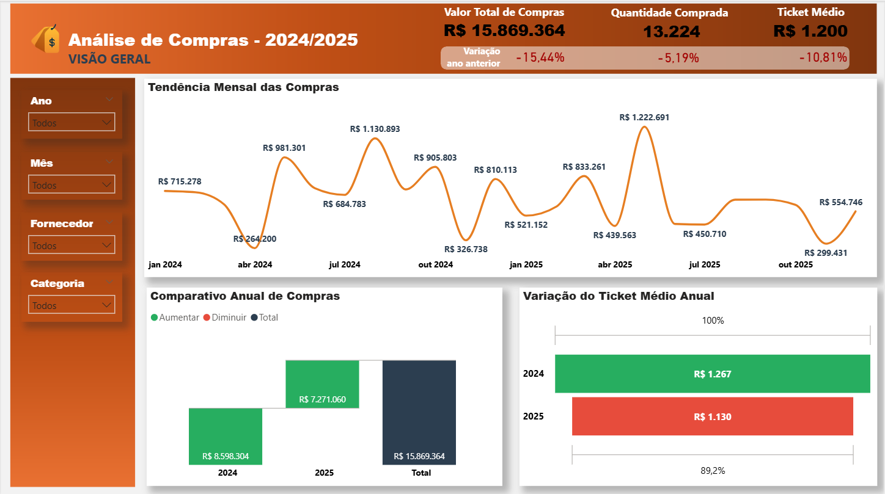

Here are some of the projects I have developed to practice and showcase my skills in data analysis, ETL, EDA, SQL and dashboards in Power BI.

powerbi_dashboards
Collection of practical Power BI dashboards focused on storytelling, KPIs and solid data modeling and DAX practices. Includes .pbix files and screenshots.
Lean pipeline for an HR dataset (attrition): cleaning, standardization, EDA and creation of a curated dataset ready for visualization in Power BI, focused on employee turnover.
Relational modeling for an e-commerce database with separate schema, seed and check scripts. Includes logical diagram and constraints documentation to ensure data integrity.
ETL pipeline for COVID-19 data (2020): ingestion, cleaning, date normalization and consolidation into an analytical dataset ready for exploration and visualization.